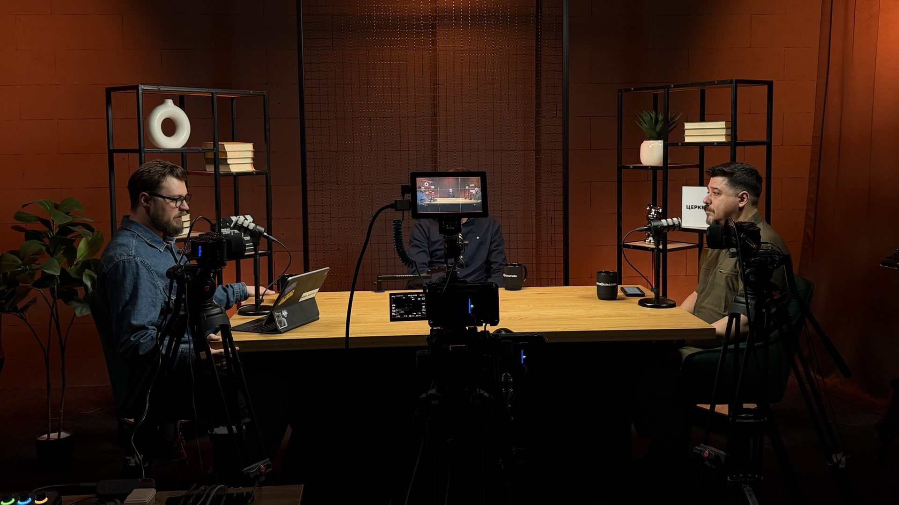
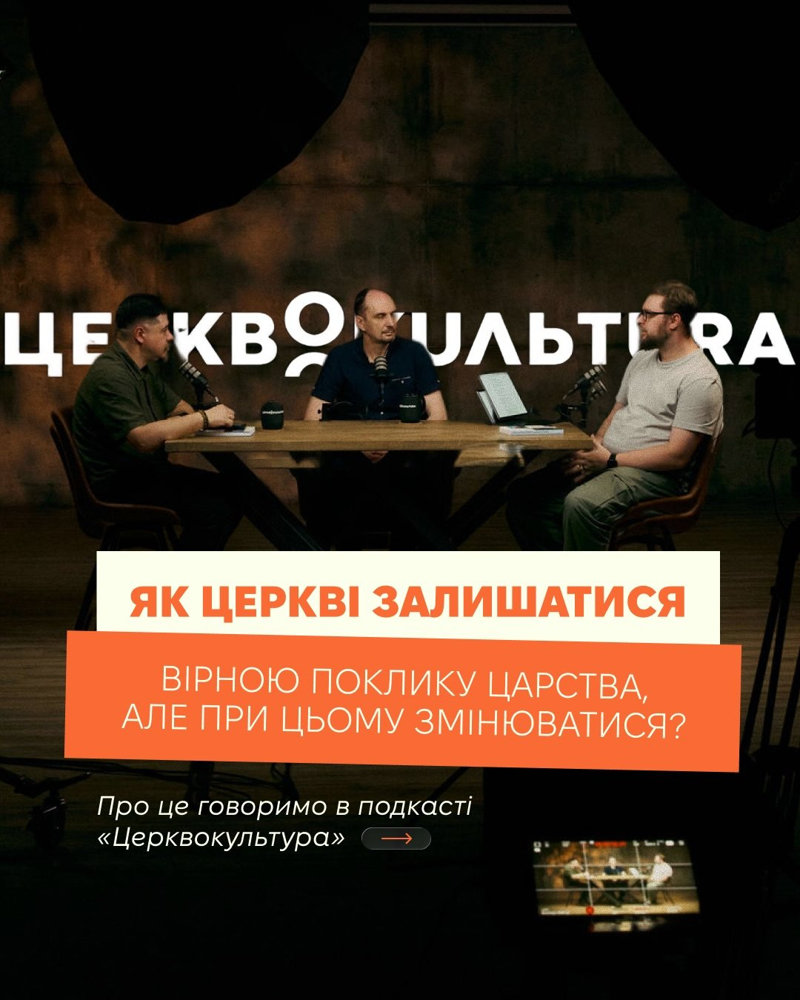
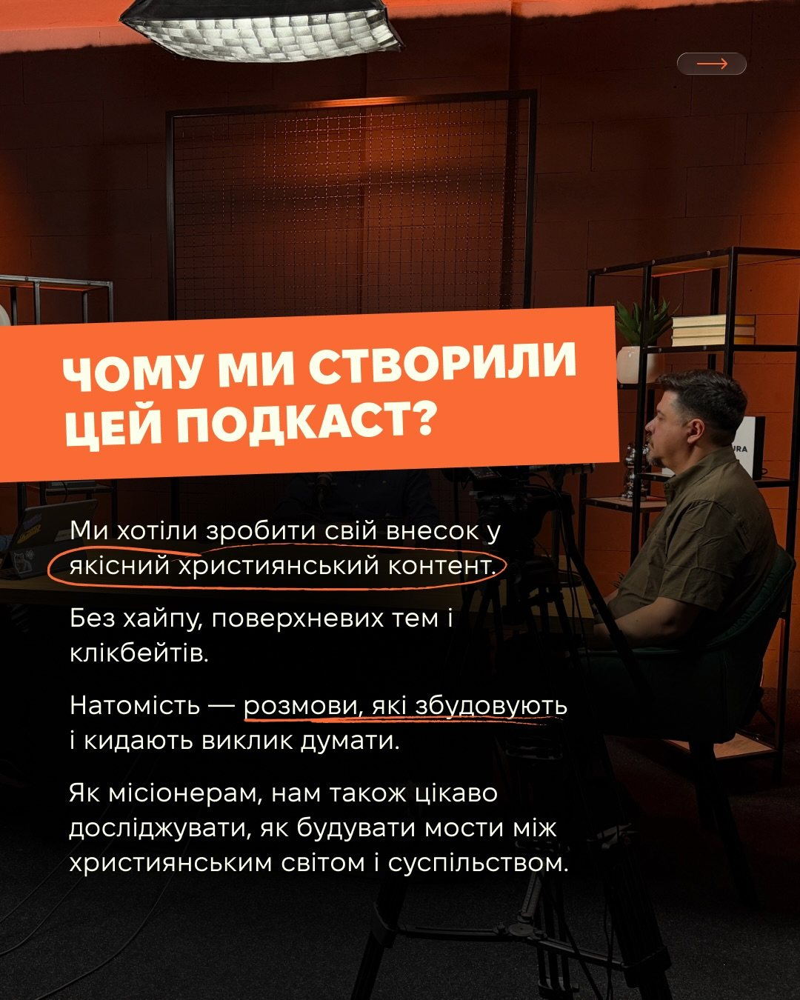
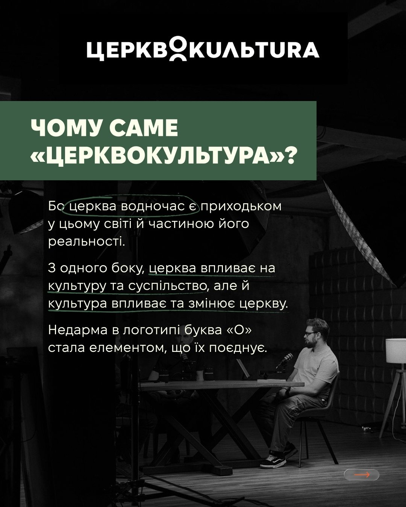
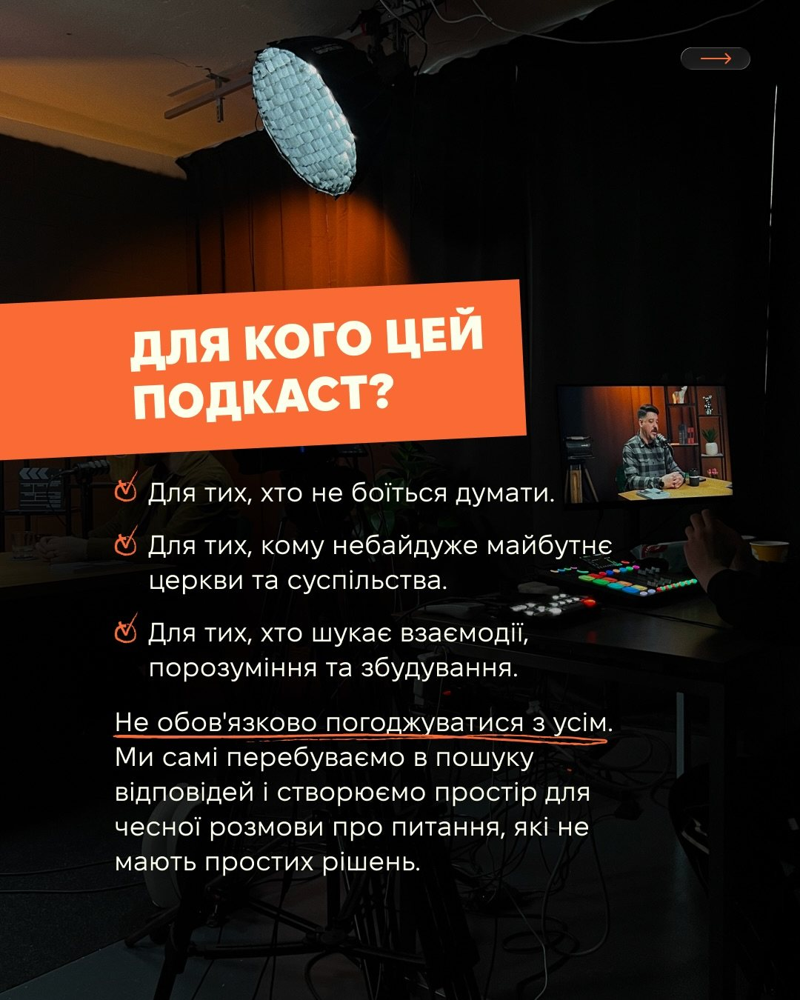
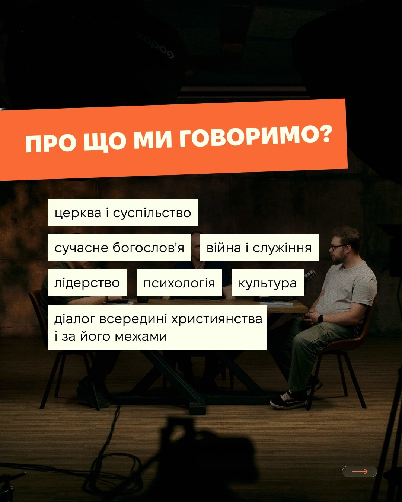
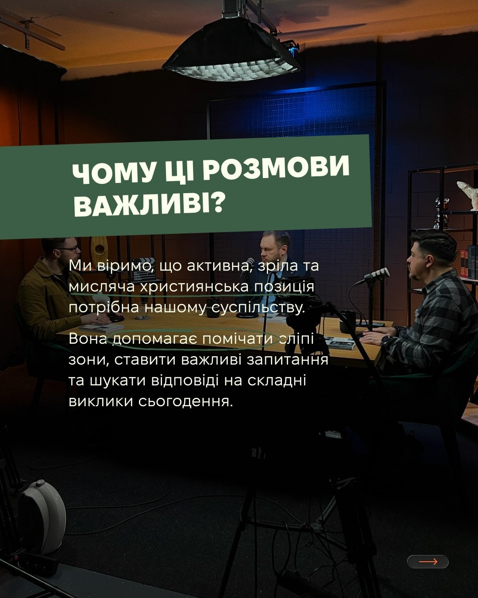
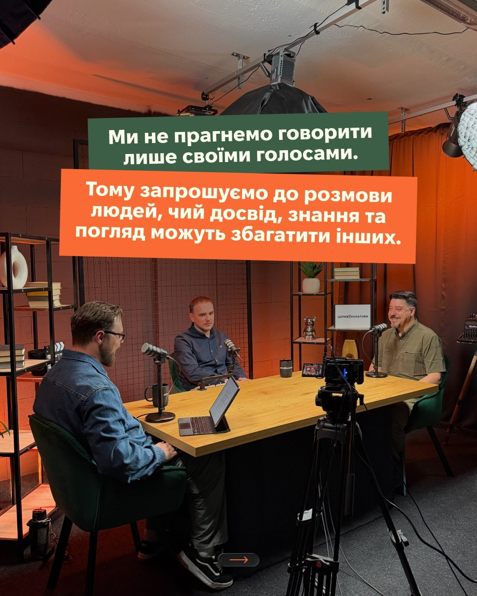
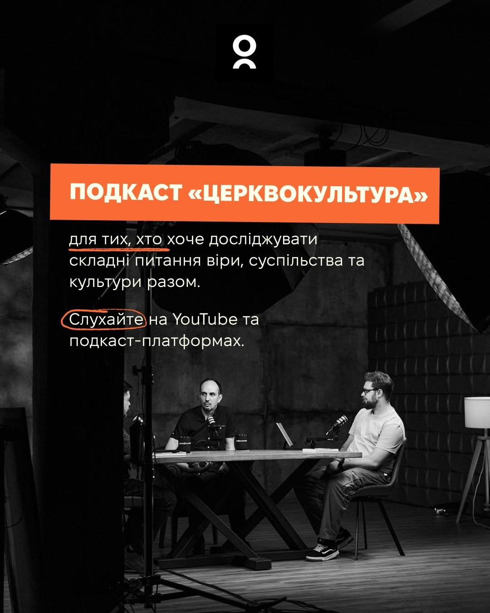

arrow_backРесурси
Подкаст
Церквокультура
Для тих, хто хоче досліджувати складні питання віри, суспільства та культури разом.
Дивитися на YouTube ↗Чому ми створили цей подкаст?
Ми хотіли зробити свій внесок у якісний християнський контент — без хайпу, поверхневих тем і клікбейтів. Натомість — розмови, які збудовують і кидають виклик думати.
Як місіонерам, нам також цікаво досліджувати, як будувати мости між християнським світом і суспільством. Тому ми запрошуємо до розмови людей, чий досвід, знання та погляд можуть збагатити інших.
- церква і суспільство
- сучасне богослов’я
- війна і служіння
- лідерство
- психологія
- культура
- діалог всередині християнства і за його межами
Останні випуски
Усі випуски на YouTube ↗Про подкаст у слайдах







